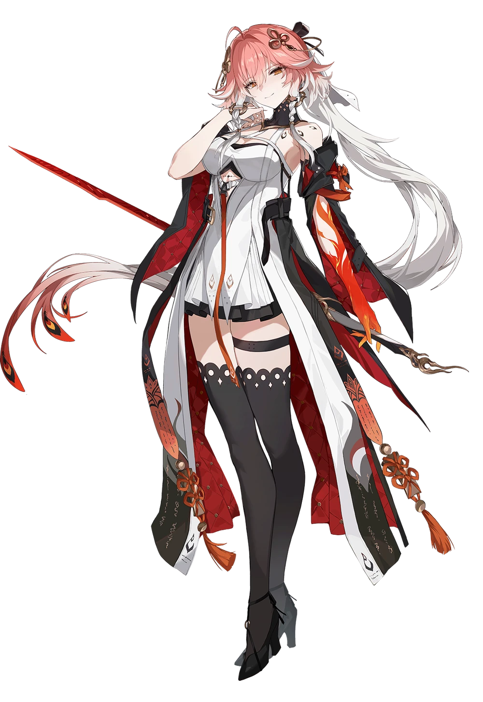
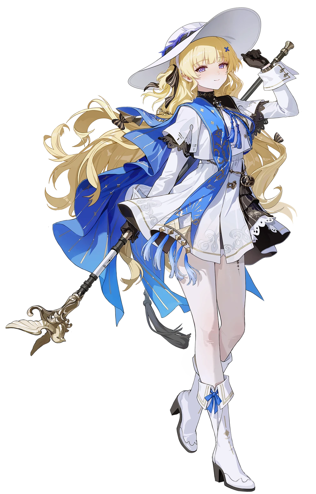
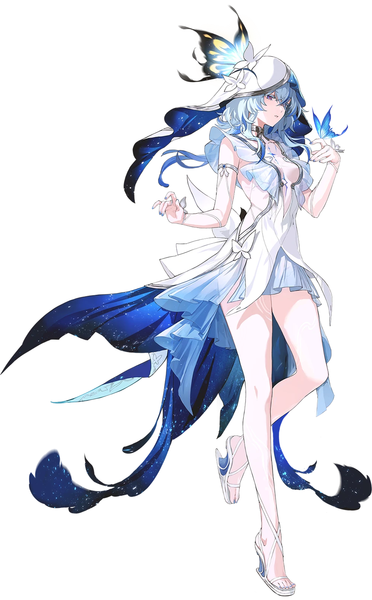

WUTHERING WEAVES
sinopsis
en wuwa se nos plantea un protagonista que perdio los recuerdos donde fue dejado en un mundo que no recuerdo/conoce, por lo que tendra que buscar una manera para recuperar sus recuerdos
wuwa es uno de los juegos que tanto me gustan por su jugabilidad y diseños de personajes, los cuales son hermosos pero respetando muchos de mis ideales aunque aveces se pasen de la raya, es uno de los pocos juegos de mundo abierto que me llamaron la atencion siendo de este tipo, siendo un tema debatible por su competidor principal genshin impact, pero aunque el wuwa es mas exigente por la calidad de sus graficos , la empresa desarrolladora escuchas mas a su comunidad que los de genshin, por lo que con mayor razon me gusto el juego, no puedo opinar mucho aun mas que puras criticas, pero si buscan un juego 3d de mundo abierto tipo rpg y algo generoso, pues wuwa puede ser una buena idea para probarlo

mi personaje favoritos es changli, phoebe y shorekeeper
changli...bueno ella es muy inteligente literalmente pero es un diseño y personalidad que me encato desde que la vi, alguien que es como un modelo a seguir, la cual es confiable y fuerte a su modo pero tambien peligroso si no se toma con precausion, shorekeeper es quien siempre cuidaria aunque ella es mas como un alguien que te apoya y se preocupa mucho por los demas, y phoebe pues...ella simplemente es una religiosa peuede que sea mas un pan blanco que nada, simplemente tiene una forma de pensar muy nocente, eso me gusta mucho
| Changli |  |
|---|---|
| Phoebe |  |
| Shorekeeper |  |